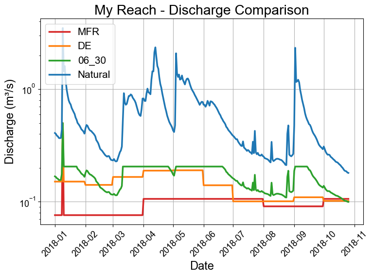
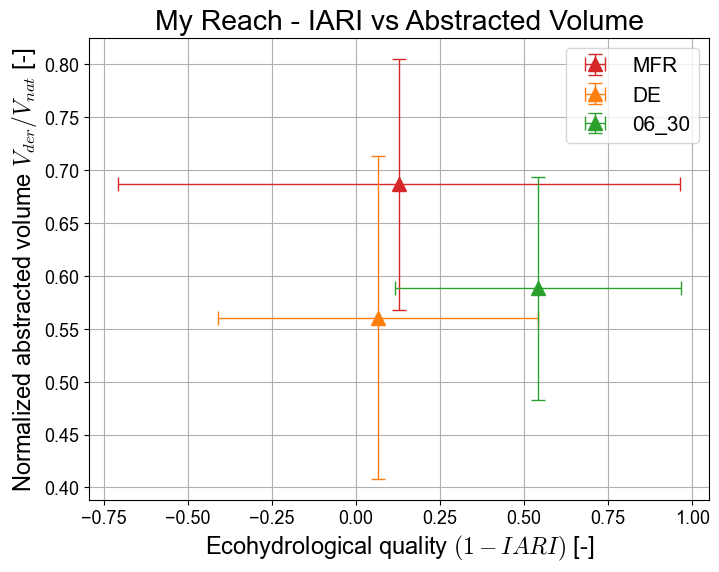

Tutorial 1 - Indicators of Hydrologic Alteration (IHA)¶
This tutorial demonstrates how to use the SARAwater package to compute the Indicators of Hydrologic Alteration (IHA) for a river reach. The IHA metrics help assess the impact of flow alterations on aquatic ecosystems.
Import libraries¶
[1]:
import os
import pandas as pd
import numpy as np
import matplotlib.pyplot as plt
import sarawater as sara
plt.style.use("stylesheet.mplstyle")
I/O paths and directories creation¶
[2]:
input_csv_filepath = os.path.join("data", "daily_discharge_7y.csv")
min_release_filepath = os.path.join("data", "minimum_flow_requirements.csv")
Read the discharge data and create a reach object¶
Read the CSV data¶
[ ]:
# Read CSV with automatic date parsing
reach_df = pd.read_csv(input_csv_filepath, parse_dates=["Date"])
# Convert to list of datetime objects
datetime_list = reach_df["Date"].dt.to_pydatetime().tolist()
# Put the discharge data into a numpy array
discharge_data = np.array(reach_df["Q"].to_list())
Initialize a reach object¶
[4]:
Qabs_max = 3
my_reach = sara.Reach("My Reach", datetime_list, discharge_data, Qabs_max)
Add scenarios to the reach object¶
Minimum Flow Requirement (MFR) scenario¶
[ ]:
# Read the minimum release values from CSV
minrel_df = pd.read_csv(min_release_filepath, header=None)
# Get the minimum release values (second column), convert l/s to m3/s
Qreq_months = np.array(minrel_df[1].tolist()) / 1000.0
# Create a constant scenario with these values
MFR_scenario = sara.ConstScenario(
name="MFR",
description="Minimum Flow Requirement scenario from CSV file",
reach=my_reach,
Qreq_months=Qreq_months,
)
# Add the scenario to the reach
my_reach.add_scenario(MFR_scenario)
Ecological scenario (using the built-in method)¶
[6]:
my_reach.add_ecological_flow_scenario(
"DE", "Ecological Flow Scenario with default parameters"
)
[6]:
Scenario(name=DE, description=Ecological Flow Scenario with default parameters, reach=My Reach)
Proportional release scenario (using the built-in method)¶
[ ]:
prop_scenario = sara.PropScenario(
name="06_30",
description="Proportional scenario",
reach=my_reach,
Qbase=0.6 * np.min(Qreq_months),
c_Qin=0.3,
Qreq_min=np.min(Qreq_months),
Qreq_max=np.max(my_reach.scenarios[1].Qreq_months),
)
my_reach.add_scenario(prop_scenario)
Let’s check we added the scenarios correctly¶
[8]:
my_reach.print_scenarios()
scenarios[0]: MFR | Minimum Flow Requirement scenario from CSV file
scenarios[1]: DE | Ecological Flow Scenario with default parameters
scenarios[2]: 06_30 | Proportional scenario
Compute the released flow discharge for each scenario and compute the IHA indices (IARI and normalized IHA)¶
[ ]:
for scenario in my_reach.scenarios:
scenario.compute_Qrel()
scenario.compute_IHA_index(index_metric="IARI")
scenario.compute_IHA_index(index_metric="normalized_IHA")
scenario.compute_natural_abstracted_volumes()
Analyse the results using a ReachPlotter object¶
Initialize the plotter¶
[10]:
plotter = sara.ReachPlotter(my_reach)
Plot samples of released flow discharge¶
[11]:
year = 2018
start_date = f"{year}-01-01"
end_date = f"{year}-12-31"
plotter.plot_scenarios_discharge(start_date=start_date, end_date=end_date)
plt.xticks(rotation=45)
plt.tight_layout()

IHA and IARI plots¶
[12]:
# plotter.plot_iha_parameters()
# plotter.plot_iha_boxplots()
# plotter.plot_iari_groups()
# plotter.plot_iari_summary()
# plotter.plot_cases_duration()
# plotter.plot_monthly_abstraction()
# plotter.plot_nIHA_summary()
# plotter.plot_nIHA_vs_volume()
plotter.plot_iari_vs_volume(save=True)
[12]:
<Axes: title={'center': 'My Reach - IARI vs Abstracted Volume'}, xlabel='Ecohydrological quality $(1 - IARI)$ [-]', ylabel='Normalized abstracted volume $V_{der}/V_{nat}$ [-]'>
